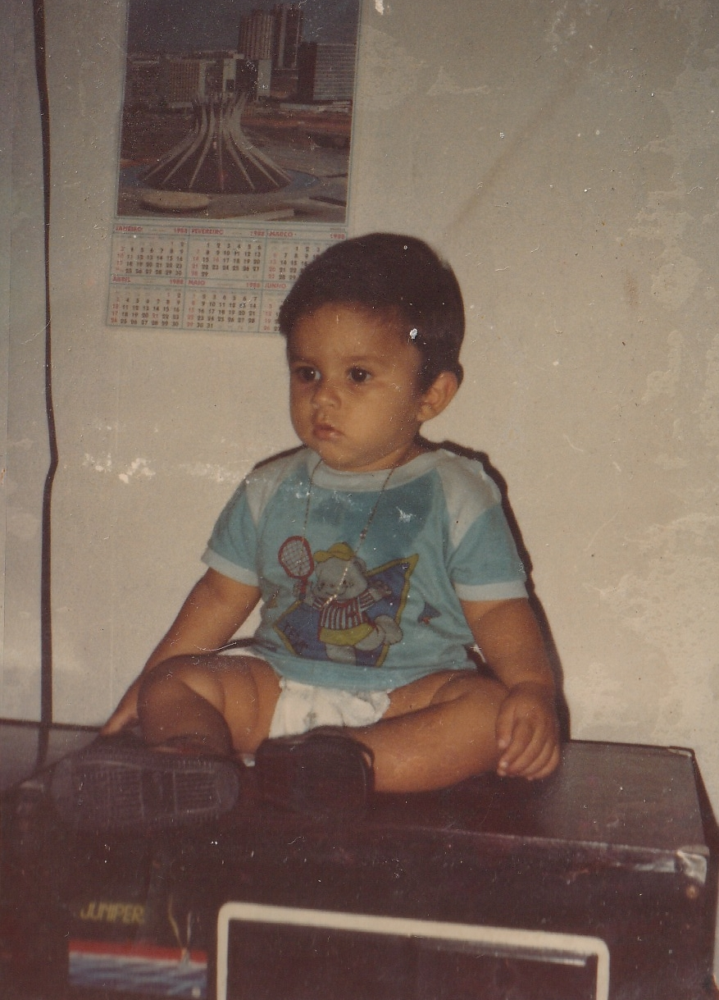
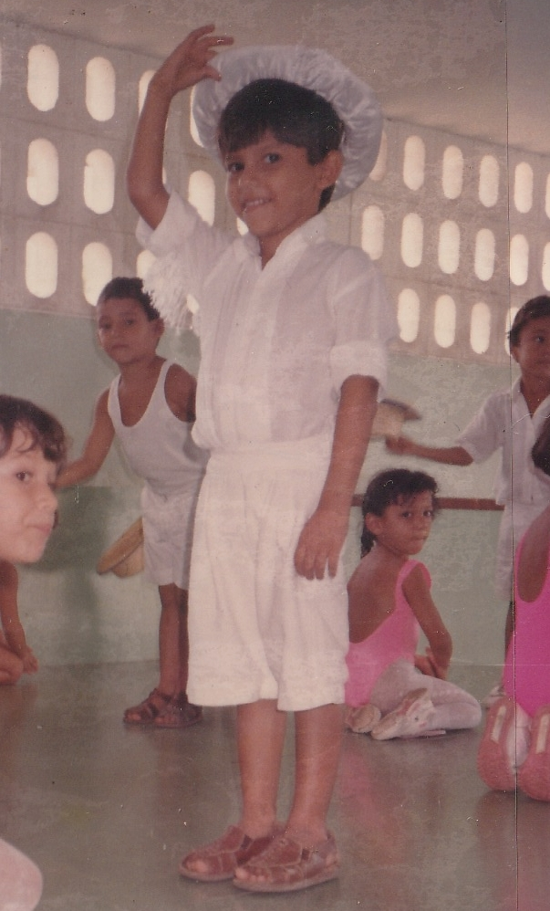
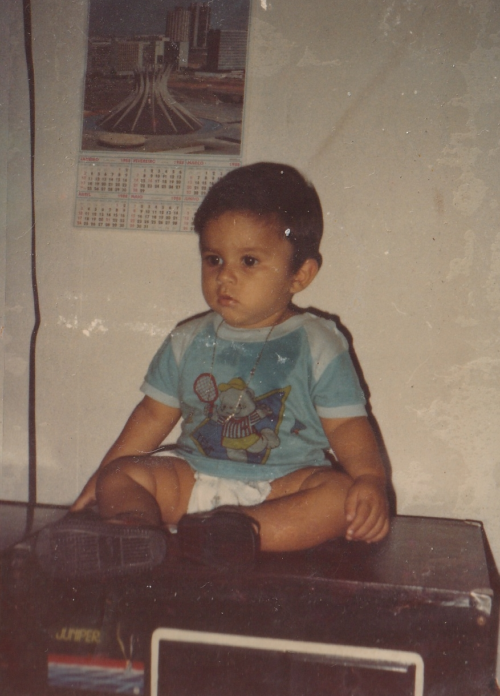
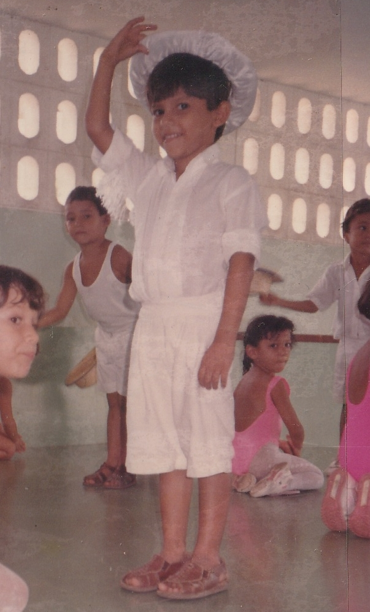

Capítulo 2 – Geração dos Pais
A geração dos pais representa o alicerce sobre o qual a família Nascimento & Vale foi edificada. São histórias marcadas por esforço, talento, vocação para o cuidado e compromisso com a família, valores transmitidos de forma silenciosa, porém constante, aos filhos e netos.
Marialvo Rocha do Nascimento
Marialvo Rocha do Nascimento nasceu em 09 de janeiro de 1968, no Cambixe - Careiro da Várzea/AM, região ribeirinha onde a vida segue o ritmo das águas e das tradições locais. Desde cedo, demonstrou inclinação para a música, tornando-se músico instrumentista, cantor, compositor, produtor musical no seu prórpio estúdio de gravação e perpetuando um dom que atravessa gerações na família. A música, para Marialvo, sempre foi mais do que som: foi expressão de fé, identidade e união familiar refletida na Banda Unidos no Som, formada por ele e seus irmãos sendo chamada posteriormente de Banda Fox.
Filho de Joaquim Alves do Nascimento e Ivaneide Rocha do Nascimento, Marialvo cresceu em meio a uma família numerosa, onde o convívio entre irmãos fortalecia os laços de solidariedade e companheirismo. Ao lado de Erivelton, Joaquim, Marivelton, Eltineide, Essivaldo, Sebastião, Erimar, Elzeneide e Deneide, aprendeu desde cedo o valor do respeito, da partilha e do trabalho conjunto.
A vivência em uma família grande moldou seu caráter e reforçou sua responsabilidade como pai, esposo e exemplo para as gerações seguintes. Sua trajetória musical e familiar tornou-se um legado vivo, transmitido não apenas por palavras, mas pelo exemplo diário.
Ana Ocarina Bentes do Vale
 Ana Oscarina Bentes do Vale
Ana Oscarina Bentes do Vale
Ana Ocarina Bentes do Vale nasceu em 27 de fevereiro de 1966, em Alenquer – PA, cidade marcada pela diversidade cultural e pela forte presença de valores comunitários. Desde jovem, demonstrou sensibilidade para o cuidado com o próximo, vocação que a conduziu à profissão de Assistente Social, dedicando sua vida ao amparo, à escuta e à promoção da dignidade humana.
Filha de Valdir Santos do Vale e Raimunda Maria da Silva Bentes, Ana cresceu em um lar onde o amor familiar e a responsabilidade caminharam juntos. Compartilhou a infância e a juventude com os irmãos Edite, Ieda, Pedro, Emanuel, Marcos e André, construindo laços que se fortaleceram com o tempo e permanecem como base de apoio e união.
Ainda na juventude, assumiu responsabilidades que exigiram maturidade e senso de dever. Quando iniciou sua vida profissional, manteve esse compromisso de forma integral: *destinava todo o seu salário para ajudar sua mãe na manutenção do lar e no sustento dos irmãos*, colocando as necessidades da família acima das próprias. Esse gesto não era apenas auxílio financeiro, mas expressão concreta de responsabilidade, solidariedade e amor.
Essa vivência moldou profundamente seu caráter, fortalecendo sua firmeza, sua empatia e sua capacidade de liderança. O cuidado que começou dentro de casa tornou-se parte essencial de sua identidade, refletindo-se mais tarde em sua atuação profissional e na formação de sua própria família.
Sua história é marcada pela empatia, pela firmeza de caráter e pela dedicação à família. Como mãe, esposa e profissional, Ana tornou-se referência de cuidado, equilíbrio e compromisso, deixando uma herança imaterial feita de valores, princípios e amor.
Juntos, Marialvo Rocha do Nascimento e Ana Ocarina Bentes do Vale formaram um elo essencial na história da família Nascimento & Vale, unindo música, serviço ao próximo e fortes laços familiares. Dessa união nasceram não apenas filhos, mas um legado que continua a ecoar nas gerações seguintes.
 Ana Oscarina
Ana Oscarina
 André, Marialvo e Diego
André, Marialvo e Diego
 Batismo Diego
Batismo Diego
.jpg) Cleame e Diego (Mirreu)
Cleame e Diego (Mirreu)
 Denise e Diego
Denise e Diego
 Tô de Olho
Tô de Olho
 Diego 07 anos
Diego 07 anos
 Diego Ago 87
Diego Ago 87
 Diego Bebê
Diego Bebê
 Diego Bebê
Diego Bebê
 Diego e Ana
Diego e Ana
 Diego e Anne
Diego e Anne
 Diego e Marialvo
Diego e Marialvo
 Diego e Vó Raimunda Maria da Silva Bentes
Diego e Vó Raimunda Maria da Silva Bentes
 Diego na moto
Diego na moto
 Diego, Ana e Denise
Diego, Ana e Denise
 Marcos, Emanuel, Diego e Pedro
Marcos, Emanuel, Diego e Pedro
 Marialvo, Ana e Diego

Diego Sentado

Diego, Dança do Boto Cor de Rosa
Marialvo, Ana e Diego

Diego Sentado

Diego, Dança do Boto Cor de Rosa